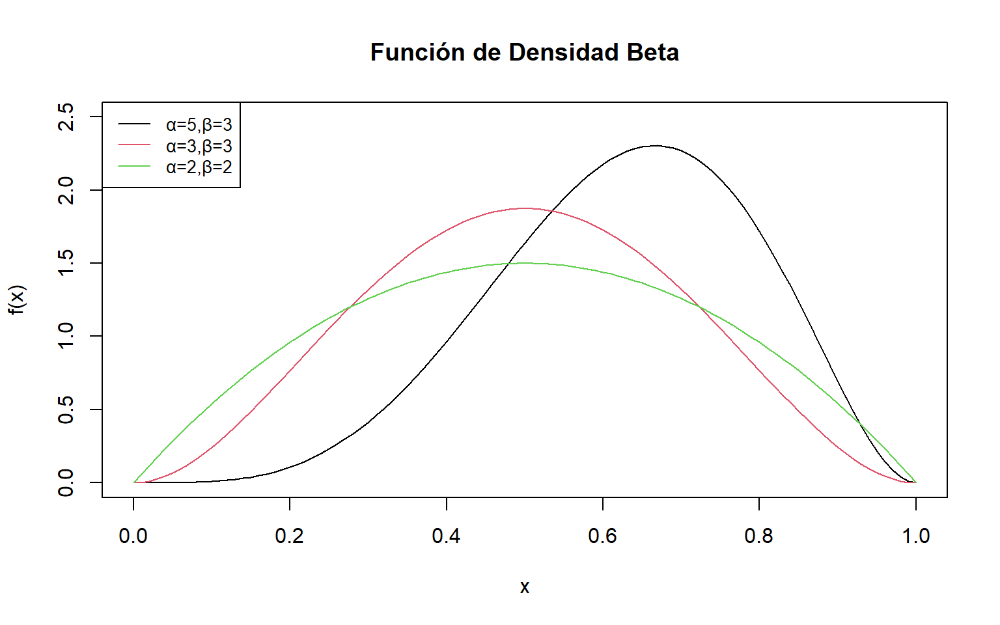

[1] 0.7618967Definición
Se dice que una variable aleatoria \(X\) tiene distribución de probabilidad Gamma con parámetros \(\alpha > 0\) y \(\beta > 0\) si y solo si la función de densidad de \(X\) es
\[f_X(x) = \begin{cases} \dfrac{x^{\alpha-1}\,e^{-x/\beta}}{\beta^{\alpha}\,\Gamma(\alpha)} & \text{si } 0 \leq x < \infty \\[6pt] 0 & \text{en cualquier otro punto,} \end{cases}\]
donde \(\displaystyle\Gamma(\alpha) = \int_0^{\infty} x^{\alpha-1}\,e^{-x}\,dx\).
Teorema
Si \(X\) es una variable aleatoria distribuida como Gamma con parámetros \(\alpha\) y \(\beta\), entonces: \(E(X) = \alpha\beta\) y \(\mathrm{Var}(X) = \alpha\beta^2\).
Prueba:
\[E(X) = \int_{-\infty}^{\infty} x\,f(x)\,dx = \int_0^{\infty} x \cdot \frac{x^{\alpha-1}\,e^{-x/\beta}}{\beta^{\alpha}\,\Gamma(\alpha)}\,dx\]
\[\int_0^{\infty} \frac{x^{\alpha-1}\,e^{-x/\beta}}{\beta^{\alpha}\,\Gamma(\alpha)}\,dx = 1 \implies \int_0^{\infty} x^{\alpha-1}\,e^{-x/\beta}\,dx = \beta^{\alpha}\,\Gamma(\alpha)\]
De la misma manera:
\[E(X) = \frac{1}{\beta^{\alpha}\,\Gamma(\alpha)}\int_0^{\infty} x^{\alpha}\,e^{-x/\beta}\,dx = \frac{\beta^{\alpha+1}\,\Gamma(\alpha+1)}{\beta^{\alpha}\,\Gamma(\alpha)} = \frac{\beta\,\alpha\,\Gamma(\alpha)}{\Gamma(\alpha)} = \alpha\beta\]
Para obtener \(\mathrm{Var}(X)\):
\[E(X^2) = \frac{1}{\beta^{\alpha}\,\Gamma(\alpha)}\int_0^{\infty} x^{\alpha+1}\,e^{-x/\beta}\,dx = \frac{\beta^{\alpha+2}\,\Gamma(\alpha+2)}{\beta^{\alpha}\,\Gamma(\alpha)} = \frac{\beta^2\,(\alpha+1)\,\alpha\,\Gamma(\alpha)}{\Gamma(\alpha)} = \alpha(\alpha+1)\beta^2\]
\[\mathrm{Var}(X) = E(X^2) - [E(X)]^2 = \alpha(\alpha+1)\beta^2 - \alpha^2\beta^2 = \alpha\beta^2 \qquad\blacksquare\]
Sea \(X\) una variable aleatoria con distribución \(\mathrm{Gamma}(\alpha = 3,\, \beta = 2)\). Encuentre \(E(X)\), \(\mathrm{Var}(X)\) y \(P(X \leq 8)\).
R/
Aplicando el teorema anterior directamente: \[E(X) = \alpha\beta = (3)(2) = 6 \qquad \mathrm{Var}(X) = \alpha\beta^2 = (3)(4) = 12\]
Para \(P(X \leq 8)\), como no existe expresión cerrada (α=3 es entero, pero usamos R):
\[\therefore\quad P(X \leq 8) \approx 0.7619\]
Definición
Sea \(\nu\) un entero positivo. Se dice que una variable aleatoria \(X\) tiene distribución chi cuadrada con \(\nu\) grados de libertad si y solo si \(X\) es una variable aleatoria con distribución Gamma con parámetros \(\alpha = \nu/2\) y \(\beta = 2\).
Teorema
Si \(X\) es una variable aleatoria \(\chi^2\) con \(\nu\) grados de libertad, entonces \[\mu = E(X) = \nu \qquad \text{y} \qquad \sigma^2 = \mathrm{Var}(X) = 2\nu.\]
Prueba. Aplique el teorema de la Gamma con \(\alpha = \nu/2\) y \(\beta = 2\): \[E(X) = \frac{\nu}{2} \cdot 2 = \nu \qquad \mathrm{Var}(X) = \frac{\nu}{2} \cdot 4 = 2\nu. \qquad\blacksquare\]
Definición
Se dice que una variable aleatoria \(X\) tiene distribución exponencial con parámetro \(\beta > 0\) si y solo si la función de densidad de \(X\) es
\[f_X(x) = \begin{cases} \dfrac{1}{\beta}\,e^{-x/\beta} & \text{si } 0 \leq x < \infty \\[4pt] 0 & \text{en cualquier otro punto.} \end{cases}\]
La función de densidad exponencial es de ayuda para modelar la vida útil de componentes electrónicos. Suponga que el tiempo que ya ha operado un componente no afecta su probabilidad de operar durante al menos \(b\) unidades de tiempo adicionales. Esto es, \(P(X > a + b \mid X > a) = P(X > b)\). Un fusible es un ejemplo de componente para el cual esta suposición es razonable.
Teorema
Si \(X\) es una variable aleatoria exponencial con parámetro \(\beta\), entonces \[\mu = E(X) = \beta \qquad \text{y} \qquad \sigma^2 = \mathrm{Var}(X) = \beta^2.\]
Prueba. Se sigue directamente del teorema Gamma con \(\alpha = 1\). \(\blacksquare\)
Ejemplo: Suponga que \(X\) tiene función de densidad exponencial. Demuestre que, si \(a > 0\) y \(b > 0\), entonces \(P(X > a + b \mid X > a) = P(X > b)\).
Solución:
\[P(X > a + b \mid X > a) = \frac{P(X > a + b,\; X > a)}{P(X > a)} = \frac{P(X > a + b)}{P(X > a)}\]
\[P(X > a + b) = \int_{a+b}^{\infty} \frac{1}{\beta}\,e^{-x/\beta}\,dx = e^{-(a+b)/\beta}\]
Esta propiedad se denomina la propiedad sin memoria de la distribución exponencial.
\[P(X > a) = \int_a^{\infty} \frac{1}{\beta}\,e^{-x/\beta}\,dx = e^{-a/\beta}\]
\[P(X > a + b \mid X > a) = \frac{e^{-(a+b)/\beta}}{e^{-a/\beta}} = e^{-b/\beta} = P(X > b). \qquad\blacksquare\]
La magnitud de temblores registrados en una región de América del Norte puede modelarse con una distribución exponencial con media \(\beta = 2.4\) (escala de Richter). Encuentre la probabilidad de que un temblor que ocurra en esta región:
a. sea mayor que \(3.0\) en la escala de Richter.
\[P(X > 3.0) = 1 - F(3.0) = e^{-3/2.4} = 0.2865\]
b. caiga entre \(2.0\) y \(3.0\) en la escala de Richter.
\[P(2.0 < X < 3.0) = F(3.0) - F(2.0) = e^{-2/2.4} - e^{-3/2.4} \approx 0.4346 - 0.2865 = 0.1481\]
La vida útil (en horas) de cierto componente electrónico sigue una distribución exponencial con media \(\beta = 200\) horas.
a. Encuentre la probabilidad de que el componente dure más de \(300\) horas.
b. Usando la propiedad sin memoria, encuentre \(P(X > 500 \mid X > 200)\).
La función de densidad beta es una función de dos parámetros definida sobre el intervalo \([0,1]\). Frecuentemente se usa como modelo para proporciones, por ejemplo la proporción de impurezas en un producto químico o la proporción de tiempo que una máquina está en reparación.
Definición
Se dice que una variable aleatoria \(X\) tiene distribución beta con parámetros \(\alpha > 0\) y \(\beta > 0\) si y solo si la función de densidad de \(X\) es
\[f_X(x) = \begin{cases} \dfrac{x^{\alpha-1}(1-x)^{\beta-1}}{B(\alpha,\beta)} & \text{si } 0 \leq x \leq 1 \\[6pt] 0 & \text{en cualquier otro punto,} \end{cases}\]
con \(\displaystyle B(\alpha,\beta) = \int_0^1 x^{\alpha-1}(1-x)^{\beta-1}\,dx = \frac{\Gamma(\alpha)\Gamma(\beta)}{\Gamma(\alpha+\beta)}\).
Las gráficas de funciones de densidad beta toman formas muy diferentes para diversos valores de los parámetros \(\alpha\) y \(\beta\).
plot(seq(0,1,0.01), dbeta(seq(0,1,0.01),5,3), col=1, type="l",
main="Función de Densidad Beta", xlab="x", ylab="f(x)", ylim=c(0,2.5))
lines(seq(0,1,0.01), dbeta(seq(0,1,0.01),3,3), col=2)
lines(seq(0,1,0.01), dbeta(seq(0,1,0.01),2,2), col=3)
legend("topleft", legend=c("α=5,β=3","α=3,β=3","α=2,β=2"),
col=1:3, lty=1, cex=0.85)
Observe que definir \(X\) sobre el intervalo \([0,1]\) no restringe el uso de la distribución beta. Si \(c \leq x \leq d\), entonces se define una nueva variable \(x^* = (x-c)/(d-c)\), de manera que \(0 \leq x^* \leq 1\). Así, la distribución beta puede aplicarse a cualquier variable aleatoria definida en el intervalo \([c,d]\) mediante traslación y cambio de escala.
La función de distribución acumulada para la variable aleatoria beta comúnmente se denomina función beta incompleta y está denotada por
\[F(x) = \int_0^x \frac{t^{\alpha-1}(1-t)^{\beta-1}}{B(\alpha,\beta)}\,dt = I_x(\alpha,\beta).\]
Cuando \(\alpha\) y \(\beta\) son enteros positivos, \(I_x(\alpha,\beta)\) está relacionada con la función de probabilidad binomial. Mediante integración por partes es posible demostrar que, para \(0 < x < 1\) y \(\alpha\), \(\beta\) enteros,
\[F(x) = \int_0^x \frac{t^{\alpha-1}(1-t)^{\beta-1}}{B(\alpha,\beta)}\,dt = \sum_{i=\alpha}^{n} \binom{n}{i} x^i (1-x)^{n-i},\]
donde \(n = \alpha + \beta - 1\). Observe que la suma del lado derecho es precisamente la suma de probabilidades de una variable aleatoria binomial con \(n = \alpha + \beta - 1\) y \(p = x\).
¿Para qué sirve esta equivalencia? Para usar las tablas de la distribución binomial al evaluar la función de distribución acumulada de una v.a. Beta. Por suerte, podemos hacerlo directamente en R. Si \(X \sim \mathrm{Beta}(\alpha = 3,\, \beta = 3)\):
Mientras que qbeta devuelve el cuantil \(\phi_p\), el valor de \(x\) tal que \(P(X \leq \phi_p) = p\).
Teorema
Si \(X\) es una variable aleatoria beta con parámetros \(\alpha > 0\) y \(\beta > 0\), entonces \[\mu = E(X) = \frac{\alpha}{\alpha+\beta} \qquad \text{y} \qquad \sigma^2 = \mathrm{Var}(X) = \frac{\alpha\beta}{(\alpha+\beta)^2(\alpha+\beta+1)}.\]
Prueba de \(E(X)\):
\[E(X) = \int_{-\infty}^{\infty} x\,f(x)\,dx = \int_0^1 x \cdot \frac{x^{\alpha-1}(1-x)^{\beta-1}}{B(\alpha,\beta)}\,dx = \frac{1}{B(\alpha,\beta)}\int_0^1 x^{\alpha}(1-x)^{\beta-1}\,dx\]
\[= \frac{B(\alpha+1,\,\beta)}{B(\alpha,\beta)} = \frac{\Gamma(\alpha+\beta)}{\Gamma(\alpha)\Gamma(\beta)} \cdot\frac{\Gamma(\alpha+1)\Gamma(\beta)}{\Gamma(\alpha+\beta+1)} = \frac{\Gamma(\alpha+\beta)}{\Gamma(\alpha)\Gamma(\beta)} \cdot\frac{\alpha\,\Gamma(\alpha)\Gamma(\beta)}{(\alpha+\beta)\,\Gamma(\alpha+\beta)} = \frac{\alpha}{\alpha+\beta} \quad\blacksquare\]
La varianza se obtiene de manera similar (ver ejercicio propuesto al final).
Una distribuidora mayorista de gasolina tiene tanques de almacenamiento a granel que se llenan cada lunes. La proporción del suministro vendida durante la semana sigue una distribución beta con \(\alpha = 4\) y \(\beta = 2\). Encuentre la probabilidad de que la mayorista venda al menos el 90% de su existencia en una semana determinada.
La proporción diaria de defectos en un proceso de manufactura sigue una distribución \(\mathrm{Beta}(\alpha = 2,\, \beta = 5)\). Encuentre \(E(X)\), \(\mathrm{Var}(X)\) y la probabilidad de que la proporción de defectos sea menor al 30%.
R/
\[E(X) = \frac{\alpha}{\alpha+\beta} = \frac{2}{7} \approx 0.2857\]
\[\mathrm{Var}(X) = \frac{\alpha\beta}{(\alpha+\beta)^2(\alpha+\beta+1)} = \frac{2 \cdot 5}{49 \cdot 8} = \frac{10}{392} \approx 0.0255\]
\[P(X < 0.30):\]
\[\therefore\quad P(X < 0.30) \approx 0.5797\]
El tiempo de vida, en años, de cierto componente electrónico sigue una distribución exponencial con media 5 años.
Determine \(f_X(x)\), \(F_X(x)\)
Determine \(E(x)\), \(Var(x)\)
Determine la probabilidad de que el tiempo promedio de vida de un componente electrónico sea de almenos 8 años.
El tiempo de espera, en minutos, hasta la llegada de un cliente sigue una distribución exponencial con una frecuencia de llegada de 5 clientes por cada 4 minutos.
Los errores en la medición del tiempo \((\mu s)\) de llegada de un frente de onda, desde una fuente acústica, se modela mediante una distribución beta de parámetros \(\alpha = 2\) y \(\beta = 6\).
¿Cuál es la probabilidad de que el error de medición en un ejemplo seleccionado al azar sea a lo sumo de \(0{,}5\,\mu s\)?
¿Cuántos errores de medición, en promedio, se reciben desde la fuente acústica?
Ejercicios del libro de texto: